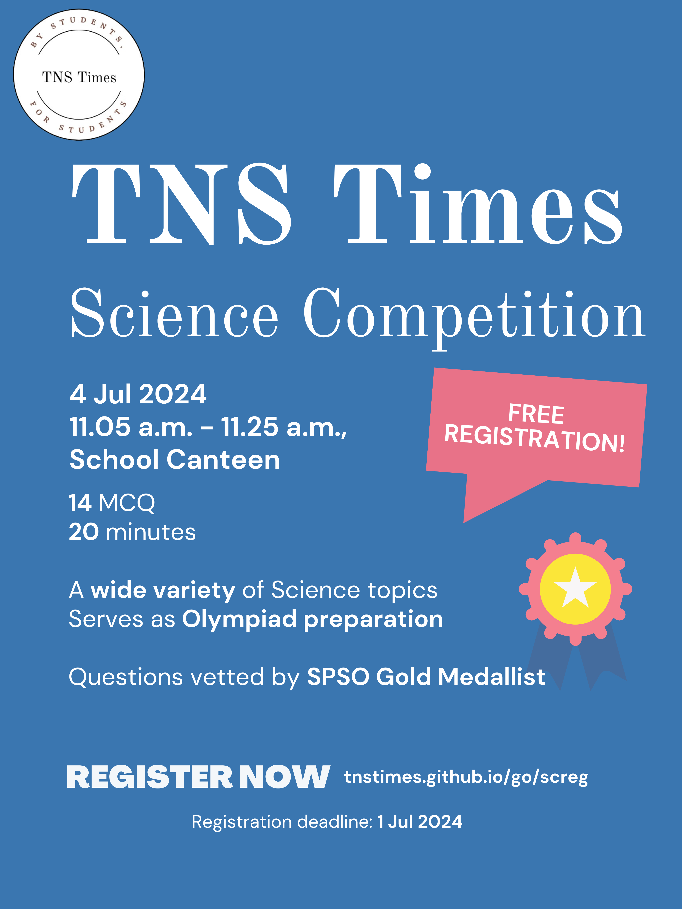

Competition Information
The TNS Times Science Competition will be held on 4 Jul 2024. The paper will consist of 14 Multiple-Choice Questions and will test a wide variety of topics.
Registration closes on 2 Jul 2024.
Successful registrants will receive a confirmation email in the email address provided by 3 Jul 2024, from goh_jun_ying@students.edu.sg (MOE ICON 2.0 email addresses) or tnstimes@gmail.com (all other email addresses).

Awards & Prizes
Note: The competition has a total mark of 60.
- 42-60: Gold Award (S$20 worth of prizes, 1 Bookmark)
- 30-41: Silver Award (S$8 worth of prizes, 1 Bookmark)
- 24-30: Bronze Award (S$5 worth of prizes, 1 Bookmark)
- 12-23: Honorary Mention (1 Bookmark)
- 0-11: Participation
All participants will be presented with a certificate.
The top 3 participants will also receive S$3 worth of prizes and a wooden cube each.
Register
By registering, you agree to the TNS Times Science Competition Terms and Conditions.
To register, please fill up the form here.
Alternatively, you may approach Jun Ying or Xinyuan in person for a hardcopy form.
Registration closes on 2 Jul 2024.
Mock Paper
Click here to access the mock paper.